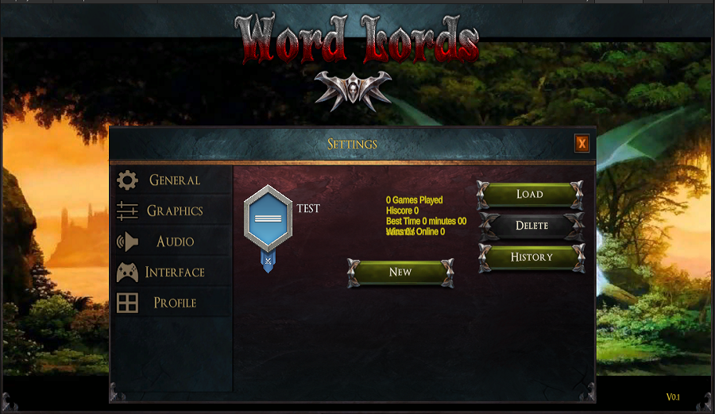
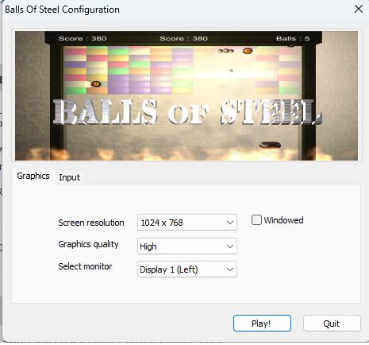
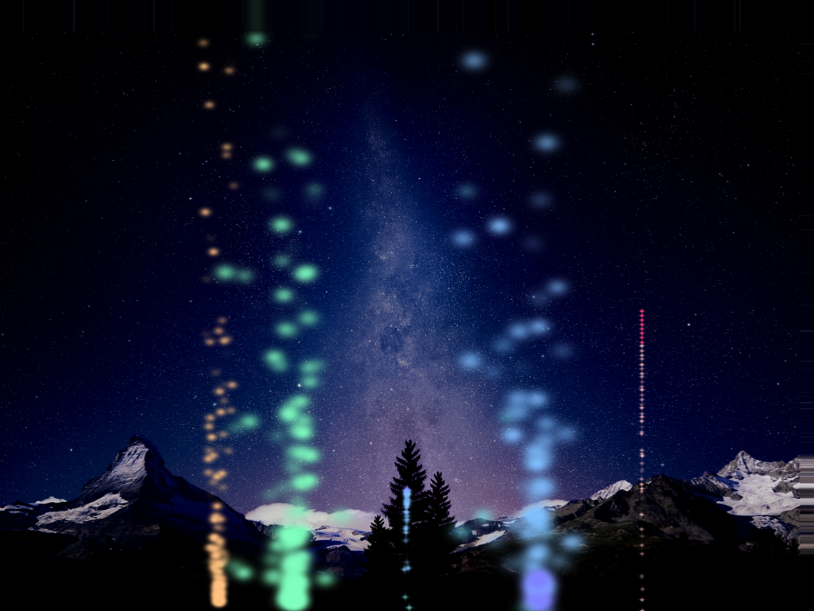

Personal Projects
Click the title to see more detailsWord Lords
|
 |
Language/IDE: Unity 2022 / C# / Visual Studio 2019 Project Duration: May 2022 - Dec 2022 Written in Unity 2022. Runs on Android & IOS. Full single player game with two themes completed. Work on multiplayer element next. |
Balls Of Steel
|
 |
Language/IDE: Unity 5 / C# / Visual Studio 2017 Project Duration: June 2015 Written in Unity 5 as a means to learn the engine. Uses Unity physics including an intro which also runs using Unity engine physics. Runs on Android & IOS. Can also be tested and run on Windows so demo is available |
Arkane

Arkane Editors

|
Language/IDE: C++ MFC & OpenGL / Visual Studio 2008 Project Duration: Feb 2012-June 2013 I developed two tools to aid in the creation of maps, items, creatures and other data for the Arkane RPG I am building. I have developed these tools for designers and artists to generate content for the game. The first of these tools (data editor) allows input of items, spells, recipes and dialogue. This is a standard Windows forms based application which allows you to create new pack files or amend existing ones. The second tool included in the suite is a map editor. This allows you to build dungeons, castles, town layouts or wilderness sections. It also supports character placement, and placing of traps and portals to link maps There are still improvements which are planned for the tools such as an isometric drag mode for the texture box tool in the map editor. |
Fireworks
|  |
Language/IDE: C++ OpenGL / Visual Studio 2003/2008
Project Duration: Oct 2010 This project was a small tool, completed in a few evenings, which implements a particle system using billboarded quads. The particle system implemented here was incorporated into my castle demo to simulate fire and smoke effects. The project allows fireworks displays to be specified in an XML format. This format defines type, position, colour and timing information. |
<< Back